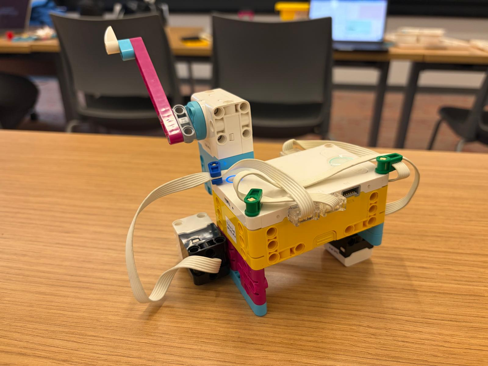

This fruit scanner uses a color sensor to identify fruit by color. Pressing the force sensor triggers a scan, and the motor turns by a different amount for each recognized fruit color.
# Setup: force sensor on A, color sensor on C, and motor on F.
from hub import port
import runloop
import force_sensor
import color_sensor
import color
import motor
# Set the motor speed in degrees per second.
MOTOR_SPEED = 300
async def main():
# Keep checking for a force-sensor press.
while True:
# Wait for the force sensor to be pressed.
while not force_sensor.pressed(port.A):
await runloop.sleep_ms(20)
# Read the color detected by the sensor.
detected_color = color_sensor.color(port.C)
# Say which fruit matches the color and turn the motor by its assigned amount.
if detected_color == color.RED:
print("Strawberry: turn -90 degrees.")
await motor.run_for_degrees(port.F, -90, MOTOR_SPEED)
elif detected_color == color.GREEN:
print("Green apple: turn 90 degrees.")
await motor.run_for_degrees(port.F, 90, MOTOR_SPEED)
elif detected_color == color.BLUE:
print("Blueberry: turn 45 degrees.")
await motor.run_for_degrees(port.F, 45, MOTOR_SPEED)
elif detected_color == color.YELLOW:
print("Banana: turn 135 degrees.")
await motor.run_for_degrees(port.F, 135, MOTOR_SPEED)
elif detected_color == color.MAGENTA:
print("Pitaya: turn -45 degrees.")
await motor.run_for_degrees(port.F, -45, MOTOR_SPEED)
else:
print("Color not recognized as one of the fruit colors.")
# Wait for the force sensor to be released before another reading.
while force_sensor.pressed(port.A):
await runloop.sleep_ms(20)
runloop.run(main())